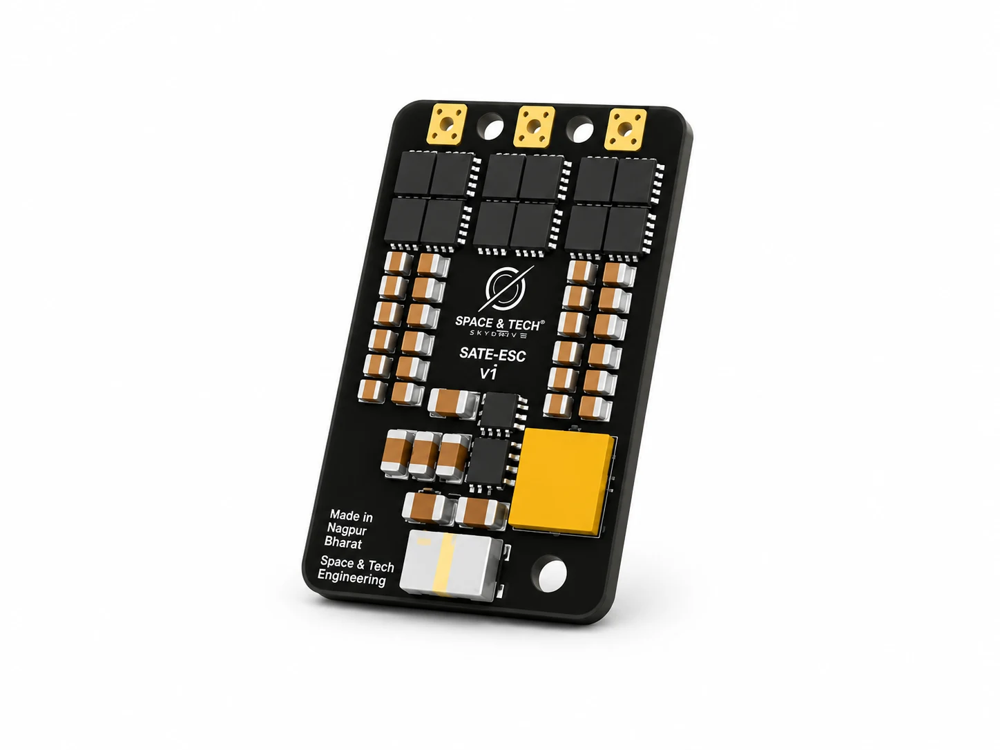
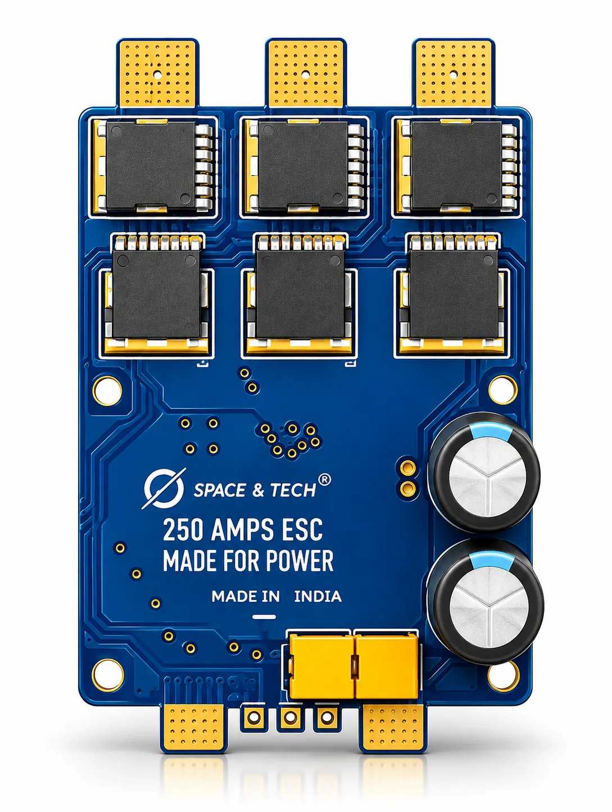

AM32 ESC explained: how to choose the right amp rating
Quick answer: AM32 is open-source ESC firmware for ARM-based ESCs. Choose the ESC by battery cell count and by motor current with a safety margin, not by the highest advertised number.
What is AM32?
AM32 is open-source firmware that runs on ARM microcontrollers inside many modern brushless ESCs. It supports digital protocols such as DShot and lets you tune settings like motor direction and timing with a configurator. Open firmware means the community can fix bugs and add features.
How to size the ESC
- Battery voltage: a 3-6S ESC suits 3 to 6 cell LiPo packs. Larger multirotors and heavy-lift drones use 6-12S ESCs.
- Motor current: look at the maximum current of your motor and propeller combination, then pick an ESC with a comfortable margin.
- Continuous vs burst: continuous current matters for real flights. Burst numbers are short peaks.
- Cooling: airflow and heatsinking decide how much current an ESC can really carry in your frame.
4-in-1 or single ESC?
A 4-in-1 ESC puts four power stages on one board. It keeps the stack tidy and light for FPV quads. Single ESCs on each arm are common on larger multirotors and make replacement cheaper when one motor channel fails.
Check protection and wiring
Use good solder joints, a low-ESR capacitor on the battery lead if the ESC needs it, and the correct signal wire from the flight controller. Always test with props off the first time.
Related products from Space and Tech Engineering

Skydrive 60A AM32 ESC for 3-6S Drones
A single 60 A AM32 electronic speed controller for 3S to 6S LiPo power systems. Compare it for multirotors that need one ESC per motor.

SATE 80A 4-in-1 AM32 ESC for 3-6S FPV
A four-channel AM32 ESC for 3S to 6S FPV builds. One board serves all four motors, with DShot support for compatible flight controllers.

SATE 200A AM32 ESC for 6-12S Drones
A single AM32 ESC for 6S to 12S UAV propulsion with a catalogue rating of 200 A continuous. Compare it for builds with a high-current motor load.
Frequently asked questions
What does AM32 stand for?
AM32 is the name of an open-source ESC firmware for ARM microcontrollers. It is used on many 32-bit brushless ESCs.
Can I use a 60A ESC on a 5-inch drone?
Yes, as long as the battery cell count matches and the motor current stays below the ESC rating. A higher rating gives more safety margin.
What is the difference between 3-6S and 6-12S ESC?
It is the supported battery voltage range. 3-6S is for small and medium drones. 6-12S is for larger, heavy-lift builds.